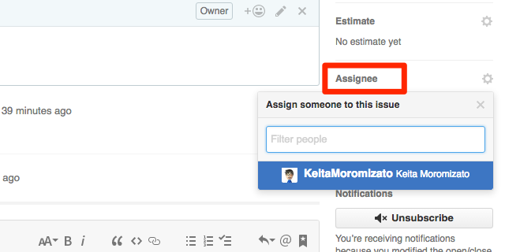

Assigneeの使い方
Assigneeの使い方
こちらは応用的な技術となります。
プロジェクト管理には必須のAssignee（アサイニー）。Issueに担当者を割り当てる機能です。Issue画面のサイドバーにある[Assignee]という文字をクリックすると、ユーザーの選択画面が出てきます。

Assigneeはもちろん途中で付け替えることもできます。そしてIssueの一覧画面ではアイコンが並ぶので、誰がどのくらいのタスクを抱えているかが一目で分かるようになります。Assigneeに指定することで、通知も逃さず受け取ることができます。ただ、1つのIssueに対して1人しかアサインできないという難点もあります。しっかりとルールを決めて運用していきましょう。